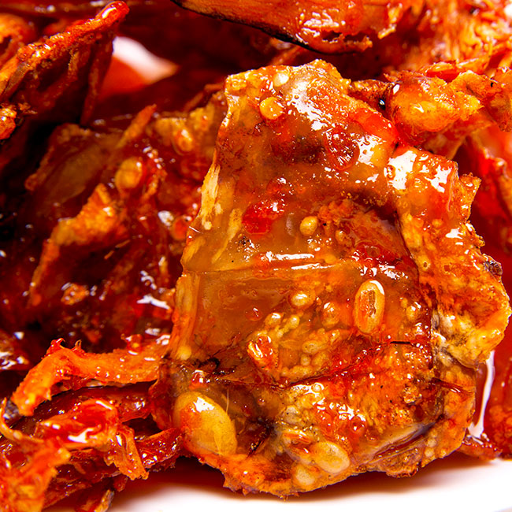

Đây là một loại đặc sản Bình Thuận có một không hai của Bình Đinh. Mắm Nhum được làm từ một loại quả chỉ có vùng núi Mỹ An Bình Thuận. Nhum có nhiều loại và có thể chế biến nhum để ăn kèm cùng ác món nướng, chiên nhưng loại nhum dùng để làm mắm thường có màu đen. Mắm nhum dễ chế biến tuy nhiên 100kg nhum chỉ chế biến được 2kg nhum. Cũng chính vì thế mà dù cho có tiền cũng khó có thể mua được món đặc sản hiếm có này. Mắm nhum rất thơm, ngát ngát đậm chất mùi quả rừng. Mắm Nhum dùng để chấm kèm với các loại thịt luộc, rau sống thì ngon tuyệt cú mèo.

Bánh ít lá gai là một trong những món đặc sản Bình Thuận thơm ngon làm nên danh tiếng cho món ngon Bình Thuận. Đây là một loại món ăn được chế biến rất cầu kì và tỉ mỉ. Lá để làm bánh là loại lá gai, sau khi được tuyển chọn những lá to dầy không bị sâu sẽ được đem phơi khô, nấu nhừ với mật mía, sau khi nước nấu đặc và nhuyễn thì cho bột nếp vào khuấy đều. Tiếp đến mang đi giã hoặc xay cho nhỏ để bột gạo, lá gai và mật được hòa quyện vào với nhau.
Một trong những món ăn phải kể đến đầu tiên trong dah sách những món đặc sản Bình Thuận đó chính là mực ngào. Mực ngào có một hương vị thơm ngon rất riêng thu hút khách du lịch. Để chế biến được món mực ngào người đầu bếp đã phải rất công phu, tài tình tỉ mỉ chăm chút cho món ăn. Mực sau khi đươc thu mua từ những cảng hải sản tươi ngon được đem về sơ chế và chế biến luôn để giữ được độ tươi ngon nguyên vẹn của mực.
Mực được ướp cùng tiêu, tỏi, ớt, mắm và một số loại gia vị khác để tạo độ thơm ngon đặc trưng của mực. Món ăn này có vị cay đặc trưng, thơm thơm của các loại gia vị sẽ làm bạn thích thú và muốn ăn ngay từ cái nhìn đầu tiên. Gía của một cân mực ngào giao động từ 200.000 – 400.000 đồng.
Không giống như các loại rượu gạo thông thường mà chúng ta vẫn biết đến, rượu bầu đá đặc sản Bình Định được nấu từ gạo lứt và chỉ đạt độ ngon nhất khi sử dụng nguồn nước tại một làng của tỉnh Bình Thuận.

Tương truyền vào thời xưa, loại thức uống này còn được tiến cung cho vua hằng năm nên được xếp hạng vào loại rượu đặc sản nổi tiếng của cả vùng.
Làng Cù Lâm (hay còn gọi là làng nghề rượu Bầu Đá), huyện An Nhơn, tỉnh Bình Thuận là làng nấu rượu thủ công từ bao đời nay nên vẫn còn giữ được nét đặc trưng nhất của rượu. Rượu Bầu Đá được đựng trong những chiếc bình sứ tinh xảo và có độ cồn rất cao, lên đến 50 độ nên người uống không quen sẽ thấy rất nóng và dễ say. Thế nhưng, điểm đặc biệt khiến người ta yêu thích những vò rượu này chính là cái vị thanh mát đến lạnh người, chỉ cần uống một ngụm là cả người sẽ thấy khoan khoái, mát lạnh và dễ chịu hơn hẳn. Bạn có thể tìm mua món đặc sản Quy Nhơn Bình Thuận này tại làng nghề nói trên hoặc các cửa hàng đặc sản phân bố khắp tỉnh.
Tré – Cái tên độc và lạ của một món ăn ở Bình Thuận. Cũng chính bởi cái tên này mà nó đã thu hút nhiều thực khách tìm hiểu và thưởng thức món ăn. Món đặc sản Bình Thuận này thực ra đã có mặt ở hầu hết các tỉnh thành Trung Trung bộ thế nhưng nổi tiếng thơm ngon nhất vẫn là Tré Bình Thuận, nó mang một hương rất riêng mà chỉ những con người ở Bình Thuận mới làm nên được. Tré là một loại món ăn gần giống với các loại nem bì miền bắc nhưng lại được thay thế bằng nhiều loại nguyên liệu khác nhau như: tai heo, lỗ mũi heo, da heo hoặc có thể là thịt ba chỉ.
Các loại nguyên liệu sau khi được thái nhỏ thành các lát thì sẽ được đem đi ướp cùng các loại gia vị như tiêu, tỏi, ớt, nước mắm và thính (bột giã nhỏ từ gạo rang). Chờ cho gia vị hòa quyện vào thịt thì mang đi gói. Tré sẽ được gói bằng lá khế hoặc lá ổi non, lớp ngoài cùng là lá chuối. Gói sau đem đi bảo quản trong khoảng 2 đến 3 ngày là có thể thưởng thức.
Món món hải sản ngon nức tiếng ở Bình Thuận. Cua Huỳnh đếđược xem là vua của các loại cua bởi nó có mai đỏ vàng như một bộ long bào uy nghi của các nhà vua, hai bên có gai li ti sắc nhọn, hai chiếc càng to chắc khỏe. Cua thường sống trong những ngách đá trên biển Bình Thuận. Cua Huỳnh Đế có thịt thơm, chắc và có thể chế biến thành nhiều món ăn ngon khác nhau như cua nướng, cua hấp… đều rất thơm ngon.
Nói đến nem chua bạn sẽ nhớ ngay đến quê hương Thanh Hóa tuy nhiên nem chua đặc sản Quy Nhơn Bình Định mang một hương vị thơm ngon nổi tiếng không kém nem chua Thanh Hóa. Nem được chế biến một cách cầu kì công phu. Thịt sau khi được lựa chọn những miếng tươi ngon nhất được mua mang về chế biến. Thịt heo được sắt thành những miếng dài mỏng, ướp đều gia vị với tiêu, tỏi, ớt tươi, nước mắn, muối và quan trọng đó là bột thính ( bột được làm từ gạo rang giã nhỏ) để 15 phút cho gia vị ngấm đều vào những miếng thịt rồi đem ra gói. Nem chợ huyện ở Bình Thuận được bọc một lớp lá khế non sau đó quấn quanh là lá chuối. Nem được gói vuông như một chiếc bánh trưng nhỏ. sau khi gói để để ở một nơi thoáng mát, chỉ vài ngày sau là có thể ăn được.
Đây là một món ăn khá lạ và độc đáo của Bình Thuận. Với một vài người đây không phải là một món dễ ăn. Gié bò là một món ăn được chế khá cầu kì công phu. Sau khi mổ bò người ta sẽ lấy phần ruột non nhất của bò để làm gié. trong phần đoạn ruột non nhất của bò có một chất dịch nhầy màu xanh lá cây. Chất nhầy xanh ấy được gọi là gié. Gie bò sau khi được lấy ra phải được chế biến luôn để lâu sẽ bị hôi và không dùng được nữa. Gié được đem đi ướp gia vị cùng tiêu, tỏi, ớt, xả, gừng …để ngấm vị. Phần ruột non, tiết và gan bò được sắt thành những miếng vuông vức nấu chung với nồi gié bò. Khi ăn bạn sẽ nhìn thấy màu của gié bò xanh ngát trong bát. Thơm ngon đậm đà. nếu là người lần đầu ăn bạn sẽ thấy không quen miệng. Tuy nhiên món này là món càng ăn càng nghiền. Ăn kèm với bánh đa và rau sống thì không còn gì tuyệt vời hơn.
Cá Chích là loại cá nước ngọt sống ở các sông hồ ao suối. Cũng bởi Bình Thuận có nhiều sông hồ nên đây là môi trường thuận lợi để loài đặc sản này sinh sống. Cá Chích đặc sản Bình Thuận có thân hình nhỏ, dài. Cá Chích sau khi được đánh bắt lên sẽ được làm sạch và chiên giòn. Vì là loài cá có kích cỡ nhỏ nên khi ăn người ta sẽ kẹp cả con cá đã được chiên vàng ăn với bánh phở cuốn, kèm rau thơm, dưa chuột. Cá ngọt thịt nên bạn ăn sẽ không bị chán. Tuy Nhiên nếu bạn là tín đồ gỏi sống bạn có thể được thưởng thức gỏi cá chích với những thớ thịt đc lọc xương làm sạch.